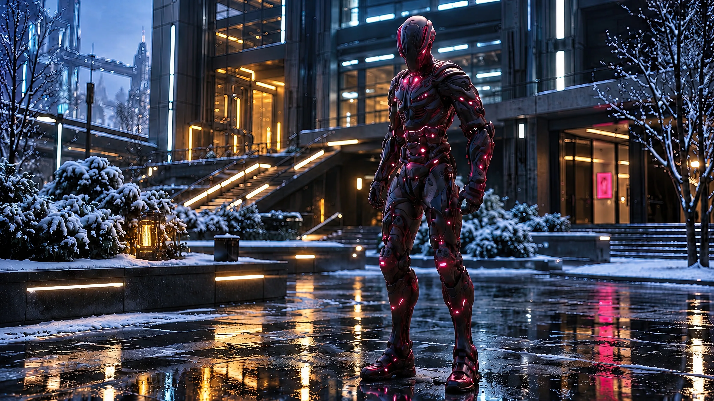

Field Observation
Sorano left an amber wall relay glowing subtly along the low structure on the left. The relay embeds hostile Synthbot communications in Earth 1 architecture.
 ©
©
GENEZYS ARCHIVE · Synthbot
Wither Mender
Identity & combat record
Archive node 01 / 04
Archive record
Sorano scans a battlefield for whatever life remains, and takes it. The Search Beam returns a fallen ally to the fight and burns an enemy in the same motion. Every lost connection weakens the Nexus, so Sorano never lets one go without a fight.
Combat signature
Scans and siphons life essence: Revives 1 ally with all Vitalis, but no shield and 1 CD. Deals 160 damage to 1 enemy.
Genezys 08:08 ™&©2026LEGIONS
Field intelligence
Archive node 02 / 04
FIELD REPORT // HOSTILE RELAY

Field Observation
Sorano left an amber wall relay glowing subtly along the low structure on the left. The relay embeds hostile Synthbot communications in Earth 1 architecture.
Environment
Object Analysis
Key Findings
Restricted visual records
Archive node 03 / 04

Motion archive
Archive node 04 / 04
Motion record not yet recovered